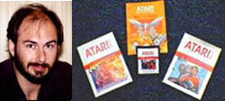

In its 11-year history, Atari has become one of the biggest, flashiest,
most
influential companies in history. The have had their share of
incredible
successes and embarassing faliures. Perhaps more than anything
else, the have
had their secrets.
Atari is very tight-lipped. At one point, employees were asked
to sign
confidentiality agreements and had to use magnetic ID carts to walk
through the
company corridors. Aside from the actual cartridges, the public
learns little
about Atari's games and the people who create them.
Until now. We have interviewed dozens of employees of the company,
past and
present. We have guaranteed them complete anonymity in exchange
for a tip, an
insight, a never-before-heard anecdote. From the interviews we
have complied
the following secrets of Atari, which are published here for the first
time.
Pong comes home
1) Nolan Bushnell, Atari's founding father, originally named
the company
Syzygy (the sun, moon and earth in total eclipse)
2) Bushnell is generally believed to be the author of PONG, Atari's
first game.
Actually, Magnavox released the ODYSSEY 100, the first home video game
system,
which included a game remarkably similar to PONG, several months before
PONG's
debut in the arcades in 1972. Years later Bushnell admitted in
court that
he had seen an Odyssey prototype on display earlier in 1972.
The Odyssey 100
was invented by Ralph Baer.
3) Bally/Midway rejected Bushnell's PONG when he demonstrated the game
in its
Chicago offices in 1972. Bushnell went back to California and
started Atari.
4) Given a choice between MAPPY and POLE POSITION, two arcade creations
by
the Japanese firm NAMCO, Bally/Midway amazingly opted for MAPPY.
Atari had to
settle for POLE POSITION, which went on to become the biggest game
of 1983.
5) GRAVITAR was one of Atari's worst-selling arcade games. So
they took the
game program out of the cabinets and converted them all into BLACK
WIDOW.
6) MIKE HALLY designed GRAVITAR. He recently redeemed himself
as the project
leader for Atari's spectacular STAR WARS game.
7) RICK MAUER never programmed another game for Atari after he
did SPACE
INVADERS for the VCS. He is said to have earned only $11,000
for a cartridge
the grossed more than $100 million.
8) TODD FRY, on the other hand, has collected close to $1 million
in royalties
for this widely criticized VCS PAC-MAN.
9) The man responsible for bringing PAC-MAN to Atari - JOE ROBBINS,
former
president of coin-op - was severly reprimanded by chairman of the board
RAY
KASSAR for making the deal with Namco without consulting him.
It seems
Robbins was in Japan negotiating a legal matter with Namco at the time,
and
Namco apparently demanded that Atari buy the home rights to PAC-MAN
as part
of the settlement. PAC-MAN had yet to take off, but when it did,
Robbins'
gutsy decision paid off as PAC-MAN went on to become the company's
best-selling
cartridge ever.
E.T.
10) The man responsible for bringing E.T. to Atari? None other
that Warner
Communications' chairman STEVE ROSS. So convinced was he that
E.T. possesed
video game star quality, Ross paid Steven Spielberg an enormous sum
(did I
hear $21 million?) for the rights the the little extraterrestrial bugger.
Designer HOWIE WARSHAW spun the game out in four months, only three
million
cartridges were sold and Atari soon began accouncing million dollar
losses.
E.T. is now selling for as little as $5 in some stores.

Howard Warshaw
11) WARSHAW also designed the RAIDERS of the LOST ARK cartridge and
YAR'S
REVENGE. which started out as a licensed version of the arcade game,
STAR
CASTLE. "YAR" is "RAY" KASSAR backwards.

12) One of Atari's most popular early arcade games was TANK, only it
didn't say
Atari anywhere on the cabinet or screen. Instead, it said "KEE
GAMES", which
was another name for Atari from 1973-78. Atari and Kee (named
after JOE
KEENAN, Bushnell's longtime partner) put out identical games in order
to create
more business for Atari. For instance, SPIKE (Kee) and REBOUND
(Atari) were
volleyball games that came out a month apart in 1974.
13) TANK was designed by STEVE BRISTOW, who is still with the company
after
all these years. Most recently he has been in charge of Ataritel,
Atari's
telecommunications project which had been codenamed, "Falcon."
14) Code-names have always been popular at Atari. The VCS was
"Stella," the
400 computer was "Candy," the 800 was "Coleen, the 5200 was "Pam."
All were
named after well endowed female employees working at Atari (except
for Stella,
which was a bicycle trade name).
15) And then there was "Sylvia," the 5200 that never was. Pam,
as everyone by
now knows, was a stripped down 400 computer for the sole purpose of
game
playing. Sylvia was intended to be Atari's answer to Intellivision
and was in
the works long before Pam was born. But problems developed largely
because
the 5200 was projected to be compatible with VCS software, which limited
the
design of the new hardware. When push finally came to shove,
Sylvia went out
the window and Pam walked in the door.
16) COSMOS, Atari's experiment with holography, was a battery-operated
game
system that was introduced at a New York press conference in the spring
of
1980. Created by AL ALCORN, COSMOS was never to be seen again.
17) Alcorn was the first engineer hired by Nolan Bushnell. His
first project
was PONG. His second project was SPACE RACE, the forerunner to
FROGGER.

18) Another project announced was a remote-control VCS. Since
it was
wireless, you could play games at 30 feet without having to hassle
with the
console. It too mysteriously disappeared from Atari's catalogue.
(Note: it
looked almost exactly like the Atari 5200)

19) Nobody in Atari coin-op liked DIG DUG, the company's first Japanese
import, except for BRIAN MCGHIE, now with STARPATH. It was McGhie
who
added the finishing touches to DIG DUG. His latest game is RABBIT
TRANSIT.
20) QUANTUM and FOOD FIGHT were not designed by Atari. They were
the work of
GENERAL COMPUTER CORP. of Cambridge, Massachusetts. GCC broke
into the
business selling kits that would speed-up MISSILE COMMAND. Atari
sued and
settled with GCC for the above-mentioned games.

21) TEMPEST was originally intended to be a first-person SPACE INVADERS
type
game. Then DAVE THEURER came up with the idea for tubes on the
screen.
THEURER also designed MISSILE COMMAND.
22) The first 200 ASTEROID machines were actually LUNAR LANDERS.
Atari was so
hot on ASTEROIDS that it cut short the production run on LUNAR LANDER
-
Atari's first vector game - and released the 200 complete with LUNAR
LANDER
cabinet art.
23) ASTEROIDS had two incarnations before it achieved its spectacular
success.
The first, PLANET GRAB, simply required you to claim planets by touching
them
with your spaceship. The second version, COSMOS, allowed you
to blow up the
planets, and duel with another ship, SPACE WARS-style. Only in
ASTEROIDS,
which came along two years later, did Atari engineer LYLE RAINS introduce
the
concept of floating rocks.
24) Many at Atari, past and present, dispute Rains' claim that he was
solely
responsible for ASTEROIDS. ED LOGG, who programmed it and who
also had his
hand in the design of CENTIPEDE and MILLIPEDE, is said to be the true
mastermind behind ASTEROIDS.
25) One of ED LOGG's games that has never been released in the arcades
is
called MAZE INVADERS.
26) BATTLEZONE programmer ED ROTBERG left Atari after he was forced
to convert
his favorite fame to Army specifications. Dubbed the MK-60 by
the Army, it
included 30 game variations, improved steering and magnification, and
simulations of Russian and American tanks. It sold for $30,000.
27) Rotberg joined two other Atari engineers, HOWARD DELMAN and ROGER
HECTOR,
and formed VIDEA, which not too long ago was bought by Nolan Bushnell
for more
than $1 million and renamed SENTE TECHNOLOGIES.
28) President of Apple Computers STEVE JOBS began his high-tech career
at
Atari. He was known to walk around barefoot, kick up his dirty
deet on
executives' desks, and talk continuously about going to India to met
a guru.
Not only did he do the latter, he desigened BREAKOUT before leaving
Atari for
good.
29) Before they left, designers AL MILLER, DAVID CRANE, LARRY KAPLAN
and BOB
WHITEHEAD were working on the games that would later become Activision
cartridges. Crane's DRAGSTER was a spin-off of the Atari coin-op
DRAG RACE and
Kaplan's KABOOM was based on the Atari coin-op AVALANCHE.
30) WARREN ROBINETT, tired of Atari's policy of no author credit for
game
designers, decided to sign his game, ADVENTURE, in an obscure secret
room in
the program. He never even told his fellow designers about this
for the fear
of work getting out and he being reprimanded. Ultimately, a 12-year-old
boy
in Salt Lake City discovered the secret room when it wad written: "Created
by
Warren Robinett." To his surprise, Robinett was never punished.
He too left
Atari shortly thereafter.